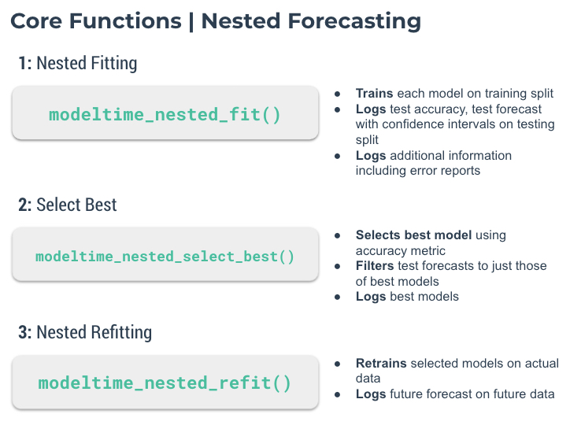

Hierarchical/Grouped
Modeltime
Misc
- Notes from Learning Lab 50
- Hierarchical
- Data in long format
- All hierarchical levels were forecasted at once
- Feature engineering
- Separate column for hierarchical categories and they were dummied
- Separate column for the levels of the hierarchical categories and they were dummied
- No real explicit sequencing variable like a date column used
- row_id and date were designated as ids in recipe step
- e.g. update_role(row_id, date, new_roll = id)
- row_id and date were designated as ids in recipe step
- date features were added
- rolling means
- months, days of week, etc
- Grouped (local modeling)
- A group variable is used to group_nest the datasets and modeling is done on each groups dataset.
Example: Local Modeling
Data preparation
library(modeltime) nested_data_tbl <- data_tbl %>% # 1. Extending: We'll predict 52 weeks into the future. extend_timeseries( .id_var = id, .date_var = date, .length_future = 52 ) %>% # 2. Nesting: We'll group by id, and create a future dataset # that forecasts 52 weeks of extended data and # an actual dataset that contains 104 weeks (2-years of data) nest_timeseries( .id_var = id, .length_future = 52, .length_actual = 52*2 ) %>% # 3. Splitting: We'll take the actual data and create splits # for accuracy and confidence interval estimation of 52 weeks (test) # and the rest is training data split_nested_timeseries( .length_test = 52 )- Create NA values for 52 weeks into the future to later fill with forecasts
- Create the nested (i.e. grouped) data structure
- Create train/test splits of the nested (i.e. grouped) structure
- id - grouping var
- .actual_data - all data
- .future_data - NAs to filled with forecasts
- .splits - train/test splits
Specify workflow objects
# prophet rec_prophet <- recipe(value ~ date, extract_nested_train_split(nested_data_tbl, 1)) wflw_prophet <- workflow() %>% add_model( prophet_reg("regression", seasonality_yearly = TRUE) %>% set_engine("prophet") ) %>% add_recipe(rec_prophet) # xgb rec_xgb <- recipe(value ~ ., extract_nested_train_split(nested_data_tbl, 1)) %>% step_timeseries_signature(date) %>% step_rm(date) %>% step_zv(all_predictors()) %>% step_dummy(all_nominal_predictors(), one_hot = TRUE) wflw_xgb <- workflow() %>% add_model( boost_tree("regression") %>% set_engine("xgboost") ) %>% add_recipe(rec_xgb)- recipe: notice .splits[[1]] (training split) is used in the recipe step
Train, Test, and Forecast
Train and test
nested_modeltime_tbl <- modeltime_nested_fit( # Nested data nested_data = nested_data_tbl, # Add workflows wflw_prophet, wflw_xgb, control = control_nested_fit(allow_par = TRUE) )Assess performance
nested_modeltime_tbl %>% extract_nested_test_accuracy() %>% table_modeltime_accuracy(.interactive = F)Displays table of forecasting metrics
nested_modeltime_tbl %>% extract_nested_test_forecast() %>% group_by(id) %>% plot_modeltime_forecast( .facet_ncol = 2, .interactive = FALSE )- facetted line charts for each group showing forecasts vs the test set.
Show any errors that occurred during modeling
nested_modeltime_tbl %>% extract_nested_error_report()Select model
best_nested_modeltime_tbl <- nested_modeltime_tbl %>% modeltime_nested_select_best( metric = "rmse", minimize = TRUE, filter_test_forecasts = TRUE )- metrics: rmse (default), mae, mape, mase, smape, rsq
- minimize: If TRUE, says select model with the lowest score
- filter_test_forecasts: If TRUE, says only keep the best test forecasts for each group logged
- You can access these test set forecasts using
extract_nested_test_forecast()
- You can access these test set forecasts using
Performance metrics of best models
best_nested_modeltime_tbl %>% extract_nested_best_model_report()- metrics for the best model of each groups test set
Visualize test set forecasts
best_nested_modeltime_tbl %>% extract_nested_test_forecast() %>% group_by(id) %>% plot_modeltime_forecast( .facet_ncol = 2, .interactive = FALSE )- facetted line charts showing test set forecasts for each group
Forecast
nested_modeltime_refit_tbl <- best_nested_modeltime_tbl %>% modeltime_nested_refit( control = control_nested_refit(verbose = TRUE, allow_par = TRUE) )- Fits selected models on each groups whole dataset and forecasts
Access Forecasts and plot them

nested_modeltime_refit_tbl %>% extract_nested_future_forecast() %>% group_by(id) %>% plot_modeltime_forecast( .interactive = FALSE, .facet_ncol = 2 )
{kind=link}
Global Modeling
Misc
- from Why arent you getting the most out of your Marketing AI
- Consider the consumer goods company whose data scientists proudly announced that theyd increased the accuracy of a new sales-volume forecasting system, reducing the error rate from 25% to 17%. Unfortunately, in improving the systems overall accuracy, they increased its precision with low-margin products while reducing its accuracy with high-margin products. Because the cost of underestimating demand for the high-margin offerings substantially outweighed the value of correctly forecasting demand for the low-margin ones, profits fell when the company implemented the new,more accurate system.
- This should be something to be aware of and monitored with global forecasting model. Does the optimization of single function unintentionally optimize the error of a series with less financial importance over a more financially important series in order to minimize global error? Where in classification models, error metrics and loss functions are chosen by the cost/benefit of TP, FP, TN, FN. Can a loss function be developed that tunes a global model and weights errors by group series?
- from Why arent you getting the most out of your Marketing AI
From paper, Principles and Algorithms for Forecasting Groups of Time Series:Locality and Globality More detailed (raw) notes, Principles and Algorithms for Forecasting Groups of Time Series: Locality and Globality
Paper tested global vs local methods on groups of series across many datasets (thousands of series).
- global models almost always had better generalization error. (ge = training set score - test set score)
- While local models may have better in-sample performance, the low generalization error of global models makes its CV score a truer representation of out-of-sample than with local methods. This should result in better production models since our algorithm selection will be better.
- global models almost always outperformed local methods on most homogeneous and heterogenous groups of series
- global models almost always had better generalization error. (ge = training set score - test set score)
Finds that for global methods, the more complex the model (e.g. OLS > ML > DL), the better the forecasting
- Using a global method > larger dataset > more degrees of freedom > suitable conditions for more complex models to perform well
Dancho, global example using modeltime, makes point that global models perform better on group dataset as a whole but not necessarily for every individual series in the dataset.
modeltime_accuracy(acc_by_id = T)will measure the accuracy per time series.- Options
- Might be better to remove worse performing series and just forecast them using a local method
- More likely its better to keep those series in the global method since they probably adds predictive value to the other series in the dataset and additionaly forecast those worse performing series with local method
If we want to estimate a complex pattern in a series and that series has sufficient sample size, then we are better off with local models.
Terms
- local method - fitting each series separately with a different model
- global method - one model for the entire set of series
Assumptions
- Groups of independent time series
- Each series in the group should evolve by similar patterns but independently of each other
- Thinking this assumption can be somewhat relaxed and still achieve superior results vs local models. (see pedestrian data example below)
- Paper lists many popular datasets that can be tested for independence to see how strict this assumption needs to be.
- Under heavy dependence global models loose their beneficial performance guarantees (though practicioners could still try them)
- Each series in the group should evolve by similar patterns but independently of each other
- Groups of independent time series
Example
- Each time series in the group represents the hourly pedestrian count of a different location across Melbournes CBD (city bar district: entertainment area)
- Each location in this district is different series.
- The domain that allows for the same pattern of evolution would be that each series is measuring pedestrian activity.
- Since theyre at different locations, the counts are independent of each other.
- (I guess if this is a large area and the same pedestrians are being counted. Maybe one group is goint to a concert, another is going to a show, and another is bar hopping, etc.)
- Each time series in the group represents the hourly pedestrian count of a different location across Melbournes CBD (city bar district: entertainment area)
Global Method Steps:
- Fix an AR order (i.e. number of lags)
- Create lags according to that AR order for each series
- For each series, embed the observed series and each lag into a matrix
- Stack these matrices on top of each other to create one large matrix
- Run CV, using the large matrix, to determine the best lag order
- Forecast using the large matrix.
Lags
- Global models should have large memories (i.e. large number of lags)
- Lag order (i.e. max lag) should usually be determined by the length of the shortest time series in the dataset.
- Optimal lag may be in the 100s
- Notable exception to the pattern of longer memory, better accuracy is intermittent data where smaller lag orders work better for global models.
- Lag order (i.e. max lag) should usually be determined by the length of the shortest time series in the dataset.
- Make sure the lag order is NOT a multiple of seasonal/cyclical frequency of each series
- Preferrably the lag order should be greater than the largest seasonal/cyclical frequency of the group as there is usually an improvement in error.
- This effect is explained as an over-fitting phenomena related to the heterogeneity of seasonal strengths in the datasets. In those datasets that contain both strongly seasonal and non seasonal series (or different seasonal periods), a global model tends to favor the seasonality at memory levels that are multiples of the frequency because it produces good results in-sample. When the memory is over the seasonal period, the global model can use its coefficients to fit both seasonal and non seasonal patterns
- Preferrably the lag order should be greater than the largest seasonal/cyclical frequency of the group as there is usually an improvement in error.
- Polynomial Autoregression (AR) models exponentiate the lags. So the design matrix includes the lags and the exponentiated series.
- If the polynomial is order 3, then order 2 is also included. So, now, the design matrix would be the lags, the square of each lag, and the cube of each lag
- Global models should have large memories (i.e. large number of lags)
Preprocessing
- Probably should standardize or at least scale
- For ML/DL models, standardization of the series had a positive, minor effect (lm models are scale invariant)
- If any of the series has a meaningful maximum or minimums at 1 or 0 respectively, then you maybe just want to scale.
- Also possible to add a scale variable to the matrix so that even if you standardize or scale, that info is still available to the model.
- Without standardization and depending on the error measure that you use, prediction errors on series that are on larger scales may have an outsized effect on the overall error calculation
- Scaling can help deal with outlier series (e.g. one series has much larger scale than the rest, dominating the fitting) and in the case of deep networks, it makes them faster to train
- Scaling by MASE and using MASE as the loss function is equivalent to to minimizing the MAE in the preprocessed time series.
- scaling done by the MASE can be applied to data as a preprocessing normalizing step, which we apply to each series. Then minimizing the MASE is equivalent to minimizing the mean absolute error in the preprocessed time series. Compared to SMAPE, MASE is easier to fit with off-the-shelf optimizers (it is convex), and it therefore isolates better the effect of the model class rather than the optimization procedure used to fit it
- Scaling by MASE and using MASE as the loss function is equivalent to to minimizing the MAE in the preprocessed time series.
- Index variable not needed.
- tidymodels has a recipe step to where you can include an index variable but give it role = id. It wont be used as a predictor but could help with separating out predictons later on.
- Probably should standardize or at least scale
Seasonality
- Dont remove the seasonality from the data
- Automatically discovered, even by a global AR model, and even though its not part of the model specification.
- For DL/ML models
- adding seasonality features may help but is not required for seasonal time series
- adding tsfeatures (ML/DL) and using larger input window sizes (DL) or sufficiently large AR orders (ML) should be enough to account for seasonality
Partitioning heterogeneous time series
- heterogeneous: different domains (measured in different units) and with different frequencies (from hourly to yearly measurements), patterns, trends, etc.
- For heterogeneous series, potentially more accuracy with partitioning the series by frequency and/or domains before fitting sub(?)-global models
- Partioning (or clustering) reduces sample size though. So something to keep an eye on.
- Without partitioning, DL global models with tsfeatures + lags + frequency variables (fourier or splines?) outperformed partitioned models in the paper
- Deep Network Autoregressive (Keras):
- ReLu MLP with 5 layers, each of 32 units width
- Linear activation in the final layer
- Adam optimizer with default learning rate.
- Early stopping on a cross-validation set at 15% of the dataset
- Batch size is set to 1024 for speed
- Loss function is the mean absolute error (MAE).
- Deep Network Autoregressive (Keras):
- Partitioning and clustering
- Both can potentially be beneficial
- Using clustering adds a potentially expensive processing step, plus a sufficiently complex model (e.g. the DL model w/additional features above) should detect whatever additional information that clustering is likely to provide.
Polynomial Regression
Bad to use for a local model but pretty good as a global model
- Local Model: Recursive forecasting makes polynomials numerically unstable (e.g. an 18-step-ahead forecast for this dataset is equivalent to a 54 degree polynomial) and are not recommended in the literature for automatic time series forecasting.
- Global Model: 2nd order polynomial fit wouldve placed 2nd in M4 (yearly ts) and the DL global model wouldve placed 3rd for the Quarterly data.
- Accomplished by squaring the lags of the series and adding them as extra variables to the large matrix.
Polynomial Autoregression (AR) models exponentiate the lags. So the design matrix includes the lags and the exponentiated series.
If the polynomial is order 3, then order 2 is also included. So, now, the design matrix would be the lags, the square of each lag, and the cube of each lag
library(dplyr); library(timetk) # tbl w/polynomial design matrix of order 3 (along with original series, group variable, and date variable) # value is the ts values (original series) poly_tbl <- group_tbl %>% tk_augment_lags(.value = value, .lags = 1:4) %>% mutate(across(contains("lag"), .fns = list(~.x^2, ~.x^3), .names = "{.col}_{ifelse(.fn==1, 'quad','cube')"))- .fn is the item number in the .fns list.
- squared lag 2 will have the name value_lag2_quad
Multivariate Time Series (see section in Forecasting, Multivariate)
- Interdependent series (think VAR models)
- Example: Energy consumption per household and income per household time series (i.e. energy consumption and income are interdependent) represent a multivariate process
- Dataset has households sampled all around the planet. The pair of time series for each household does not necessary affect any of the other households, but we could assume that they follow the same pattern.
- Sampled from around the planet allows us to reasonably assume these pairs of time series are independent.
- Dataset has households sampled all around the planet. The pair of time series for each household does not necessary affect any of the other households, but we could assume that they follow the same pattern.